Anglo pro´s
En Colegio Anglo realizamos un anglo pro cada ciclo escolar en este
se presenta un proyecto que tiene la finalidad de mejorar nuestra comunidad.
Mis tres años de secundaria realice dichos proyectos, en mi primer año realice una cuarto de conciencia el cual
consistía en adornar la mitad de un salón como nuestro futuro más cercano y posible y el otro lado como nuestra mejor opción de futuro,
el cuarto iba inspirado en la contaminación y como esta nos afecta y afectaría a un más a futuras generaciones.
Mi segundo año fue un proyecto de brindar comida en base a los kilos recolectados de basura en la playa, donde distintas enramadas en la playa
brindaran un platillo para la causa que iba desde una bebida hasta una mariscada.
Por ultimo en mi tercer año realizamos el prototipo de un fraccionamiento donde se implementaban principios ecologicos como el reutilizar,
el fraccionamiento albergaría casas hechas de contenedores no usados y cubiertos con una pintura especialmente para reducir el calor.


 
